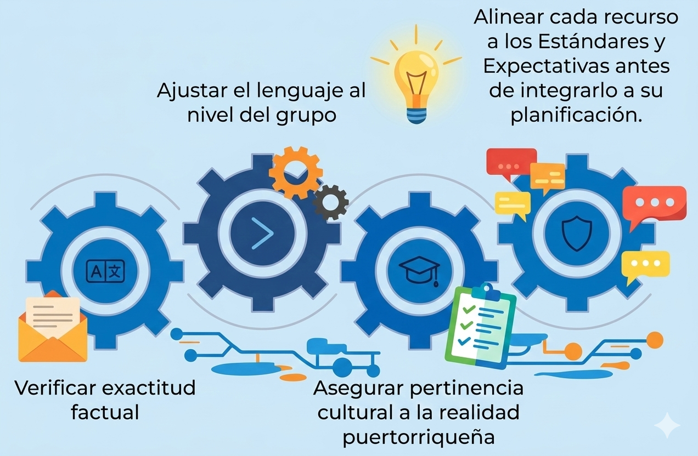

Módulo 2: Optimización de la planificación y diseño de recursos didácticos con IA
Contexto del MóduloBienvenidos y bienvenidas al segundo módulo de este programa de formación profesional. En el primer encuentro exploramos qué es un Modelo de Lenguaje de Gran Tamaño (LLM), sus posibilidades pedagógicas y los riesgos éticos asociados a su uso en la gestión docente. En este módulo daremos un paso más: llevaremos la IA directamente al corazón de su práctica académica.
Llevaremos la IA al corazón de la práctica cotidiana de planificación, diseño de materiales y evaluación, con el objetivo de transformar la manera en que organizan y preparan su enseñanza, sin perder de vista su juicio profesional como docentes.
Este módulo no se centra en más teoría sobre IA, sino en una óptica pedagógica y práctica de uso: cómo traducir sus estándares, objetivos y necesidades reales de aula en instrucciones claras (prompts), cómo revisar críticamente lo que devuelve la aplicación basada en LLM y cómo convertir esos borradores en recursos didácticos de calidad.
Lo que proponemos es que transiten de la curiosidad o el uso ocasional a una comprensión clara y fundamentada de cómo integrar los LLM y los bots que los utilizan en su planificación, qué pueden hacer en favor de su trabajo diario y, sobre todo, qué no deben delegar nunca sin su vigilancia y criterio profesional.
Como maestros y maestras, ustedes ya enfrentan una realidad de alta demanda: planificaciones detalladas, actividades diferenciadas, instrumentos de evaluación, materiales para practicantes y documentación para supervisión. Cada uno de estos componentes exige tiempo de redacción técnica que, muchas veces, compite con el tiempo disponible para observar, acompañar y retroalimentar a sus estudiantes y futuros docentes. Este módulo se diseña precisamente para aliviar esa carga de producción inicial, sin renunciar a la calidad ni a la autonomía docente.
Paralelamente, el contexto educativo se mueve rápido: bots y aplicaciones basadas en LLM, como ChatGPT y Microsoft Copilot, ya forman parte del ecosistema de trabajo de muchos docentes y estudiantes. Algunos los usan de forma estratégica; otros, sin criterios claros de alineación curricular o sin atender a la diversidad del grupo. En este escenario, ustedes tienen la responsabilidad y la oportunidad de modelar un uso informado, crítico y ético de estos recursos, mostrando cómo la IA puede apoyar la planificación y el diseño, pero nunca sustituir la mirada profesional del maestro.
Como maestros y maestras, ustedes sostienen simultáneamente la planificación diaria, la mentoría a practicantes y la atención a grupos heterogéneos de estudiantes. En ese contexto, la evidencia reciente muestra que los LLM se están utilizando para “generar ideas, redactar borradores y apoyar la comprensión”, pero persisten dudas sobre cómo alinearlos al currículo, diferenciar materiales y mantener la calidad pedagógica (Damiano et al., 2024).
Este módulo aparece en el momento clave en que ya conocen los fundamentos y la ética de los LLM, y necesitan herramientas operativas concretas: cómo pedirle a un bot o app con LLM lo que realmente necesitan (ingeniería de prompts), cómo convertir estándares del DEPR en planificaciones completas y cómo adaptar un mismo contenido a distintos niveles y contextos de aula. La intención es que los LLM dejen de ser una curiosidad tecnológica y se conviertan en aliados estratégicos para reducir la carga de redacción “desde cero” y aumentar el tiempo disponible para el trabajo pedagógico profundo.
Objetivo general
Desarrollar en los maestros la capacidad de utilizar modelos de lenguaje de gran tamaño y las aplicaciones que los incorporan para diseñar, adaptar y evaluar recursos didácticos alineados al currículo del DEPR, mediante el dominio de estrategias avanzadas de ingeniería de prompts, planificación, diferenciación e instrumentación evaluativa.
Objetivos específicos
Al finalizar este módulo, usted:
- Reconocerá los componentes de un prompt efectivo (Rol, Contexto, Tarea, Formato y Restricciones) y su impacto en la calidad de las respuestas generadas por la IA.
- Comprenderá los principios básicos de alineación curricular entre los productos generados por IA y los Estándares y Expectativas del DEPR.
- Formulará prompts avanzados, utilizando iteración y estrategias como el few-shot prompting, para obtener planificaciones, actividades y recursos acordes al nivel y contexto de su grupo.
- Generará borradores de planes de clase (diarios y de unidad) con apoyo de aplicaciones basadas en LLM y ajustado esos borradores al tiempo lectivo real y a los objetivos de aprendizaje establecidos.
- Utilizará LLM, a través de bots y asistentes, para nivelar textos y producir versiones diferenciadas de un mismo contenido, atendiendo a distintos niveles de comprensión lectora, educación especial y aprendices de un segundo idioma.
- Diseñará, con apoyo de aplicaciones basadas en LLM, bancos de reactivos, ejercicios de práctica y casos de estudio, así como rúbricas analíticas y listas de cotejo alineadas a los objetivos de la lección.
- Fortalecerá su disposición crítica hacia el uso de LLM y de los bots que los implementan, asumiendo su rol como curador y editor de los materiales generados, más que como usuario pasivo de la herramienta.

Human in the Loop: El Docente como Validador
Al igual que en el Módulo 1, este módulo no busca que usted delegue la planificación en la IA, sino que transforme su rol: de “productor solitario desde cero” a arquitecto de aprendizaje que aprovecha los borradores de la IA para ganar tiempo, pero mantiene la decisión profesional sobre qué se usa, qué se ajusta y qué se descarta. El compromiso clave es mantener siempre la lógica de human in the loop: nada generado por un bot o app con LLM se utiliza con estudiantes sin pasar por su revisión curricular, ética y contextual.
Esto implica: verificar exactitud factual, ajustar el lenguaje al nivel del grupo, asegurar pertinencia cultural a la realidad puertorriqueña y alinear cada recurso a los Estándares y Expectativas del DEPR antes de integrarlo a su planificación.